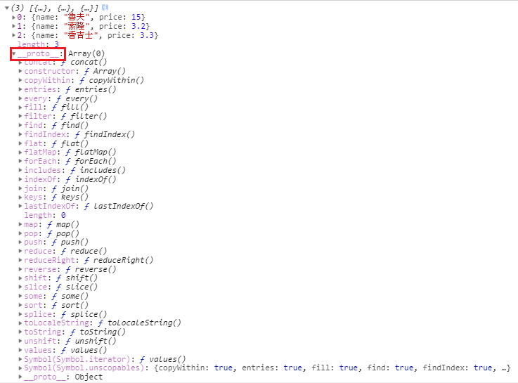

ES6 以前在處理陣列都是使用 for 迴圈，以陣列元素的數量來設定 for 迴圈 的次數，ES6 新增了許多方法來搭配 箭頭函式 =>、樣板字串 template-string 使程式碼更精簡、直覺
以下是以往處理陣列中的資料時，透過 for 迴圈 一一取出資料的方法
1 | let wanted = [ |
而 jQuery 當然也有對應的方法來處理陣列，就是 $.each(array, function(index, item){})，結果同上
array: 要帶入的陣列index: 索引item: 陣列中的元素
1 | $.each(wanted, function (i, person){ |
以下一一介紹 ES6 所新增的陣列方法
forEach()
ES6 的 array.forEach((item, index, array) => {}) 和 jQuery 的方法很類似，只是帶入的參數位置不太一樣，以下範例同時加入 “箭頭函式” 和 “樣板字串”
item: 陣列中的元素index: 索引array: 整個陣列，也較少用到
1 | wanted.forEach(person => console.log(`${person.name} 懸賞 ${person.price} 億貝利`)); |
無法被中斷
forEach() 無法被中斷，如果加入 break 會出現錯誤 Error，所以如果需要中斷還是要使用 for 迴圈
1 | wanted.forEach(person => { |
無法使用的陣列
在物件中，有許多物件有著陣列的外觀但不能使用陣列的所有方法稱為 “類陣列” Array-like，其中有部分的類陣列 “不能” 使用 forEach()
arguments: 無法使用forEach()，會跳錯DOM 陣列: 可以使用forEach()
判斷物件是否有指定的方法可以從 console 中的原型 __proto__ 來查看

不會回傳
在 forEach() 中不會有回傳值，所以將其賦予一個變數會得到 undefined
1 | var forEachReturn = wanted.forEach(person => console.log(`${person.name} 懸賞 ${person.price} 億貝利`)); |
filter()
顧名思義 filter() 可以用來過濾陣列中符合條件的元素，但並不會對元素進行修改，將條件寫在 return 中就會回傳，如果沒有設定條件就會回傳空陣列
1 | var filterEmpty = wanted.filter((item, index, array) => {}); |
find()
用來搜尋陣列中符合條件的物件，但 “只能有一個”，如果符合條件的物件大於一個，就只會回傳第一個 ; 同樣的，如果沒有設定條件就會回傳 undefined
1 | var findEmpty = wanted.find((item, index, array) => {}); |
map()
map() 與 forEach 最大的不同就是可以回傳新陣列，並透過新的變數來接收，如下範例因為是透過展開 ... 賦值，所以兩個陣列並沒有任何關聯
1 | const newWanted = people.map((item, index, array) => { |
回傳的新陣列與原陣列長度相同，不符合的物件會出現 undeined，如果沒有寫 return 還是全部都會回傳 undefined，所以如果要過濾元素，就不適合使用 map，map 適合單純調整元素的內容
1 | var mapEmpty = wanted.map((item, index, array) => {}); |
every()
用來驗證全部的結果
- 如果全部為
true，回傳true - 如果有一為
false，回傳false
1 | let tenUp = wanted.every((item, index, array) => { |
some()
同樣用來驗證全部結果，但條件與 every() 不一樣
- 只要有一為
true，回傳true - 如果全部為
false，回傳false
1 | let tenUp = wanted.some((item, index, array) => { |
reduce()
reduce() 是 ES6 陣列方法當中最特別的一個，其參數函先前的方法不一樣，他會將前一個回傳的值和下一個物件再做計算，很適合用在累加上，該方法可以拆解成以下方式
1 | [x1, x2, x3, x4].reduce(f) = f(f(f(x1, x2), x3), x4); |
previousValue: 前一個參數，如果是第一個元素，那這個值就是另外傳入或初始化的值currentValue: 當下這個參數index: 當下這個索引array: 整個陣列initialValue: 初始化的值
同樣的，如果沒有回傳結果會是 undefined，其中 0 就是 initialValue
加總
加總是 reduce 很常用到的技巧，只要將前一個值與當下的值相加，就會得到加總
1 | let wanted = [ |
取最大值
reduce 是前一個值與當下的值不斷循環，所以透過 max 取較大值就可以取得最大值，同理最小值 min 也可以
1 | const maxPrice = wanted.reduce((pre, cur, i) => { |